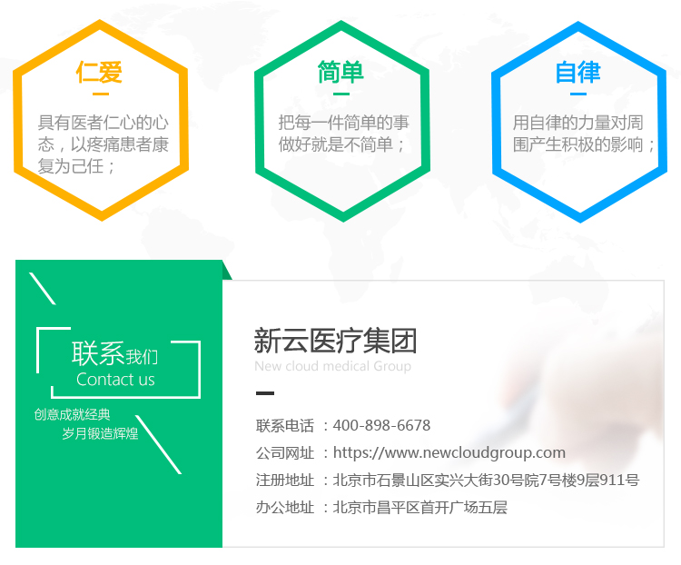

新云医疗公司简介
New cloud medical company profile新云医疗是国内领先的疼痛专科医联体，依托国家重点专科·中日医院疼痛专科医联体、国家级远程医疗平台、顶级医院品牌和专家资源库，充分利用国际疼痛学科优势，建设国家、省、市、县疼痛云平台分级诊疗中心。向全国市县级公立二级医院提供疼痛特色专科解决方案，打造市县级特色疼痛科室，提升疼痛专科诊疗水平，构建专业完善的导诊会诊网络，长效科学的运营体系。
新云医疗是国内领先的疼痛专科医联体，依托国家重点专科·中日医院疼痛专科医联体、国家级远程医疗平台、顶级医院品牌和专家资源库，充分利用国际疼痛学科优势，建设国家、省、市、县疼痛云平台分级诊疗中心。向全国市县级公立二级医院提供疼痛特色专科解决方案，打造市县级特色疼痛科室，提升疼痛专科诊疗水平，构建专业完善的导诊会诊网络，长效科学的运营体系。
我们的使命
Our mission通过物联网服务，提升疼痛患者的生活品质
打造疼痛诊疗云平台，让免除疼痛为人们生活带来持续不断的便捷和舒适；
关注疼痛患者需求，并针对不同病症提供差异化的产品和服务；
与合作伙伴共同打造健康的互联网医疗环境。
愿景：成为疼痛康复领域受尊重的企业
Vision: a respected enterprise in the field of pain recovery不断倾听和满足用户的需求，引导并超越用户需求，赢得用户尊敬；
通过提升企业地位和品牌形象，使员工具有高度的企业荣誉感和自豪感；
推动互联网医疗行业的的健康发展，与合作伙伴共同成长，赢得行业尊敬；
注重企业责任，关爱社会、回馈社会，赢得社会尊敬；
愿景：成为疼痛康复领域受尊重的企业
Vision: a respected enterprise in the field of pain recovery注重长远发展，不因商业利益伤害用户价值；
关注并深刻理解用户需求，以卓越的产品和服务满足用户需求；
重视与用户的情感沟通，尊重用户感受，与用户共成长；
以研发和持续创新驱动公司发展；
